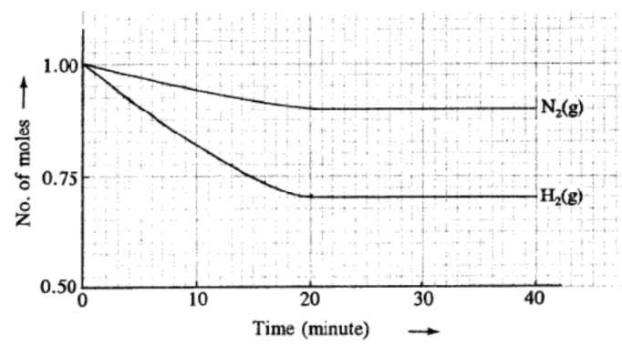

2021-10-23
Question 1
Ammonia can be produced by a process called the Haber process.
2H2(g) + 2NO(g) --> 2H2O(g) + N2(g)
a) Write down the equation of Haber process. Specify any condition needed.
b) The graph below shows the amounts of nitrogen and hydrogen at different times,
after mixing 1 mole each of the two gases in the container, until equilibrium has been reached.
Given that Kc = 0.625 M2, calculate the volume of the container.